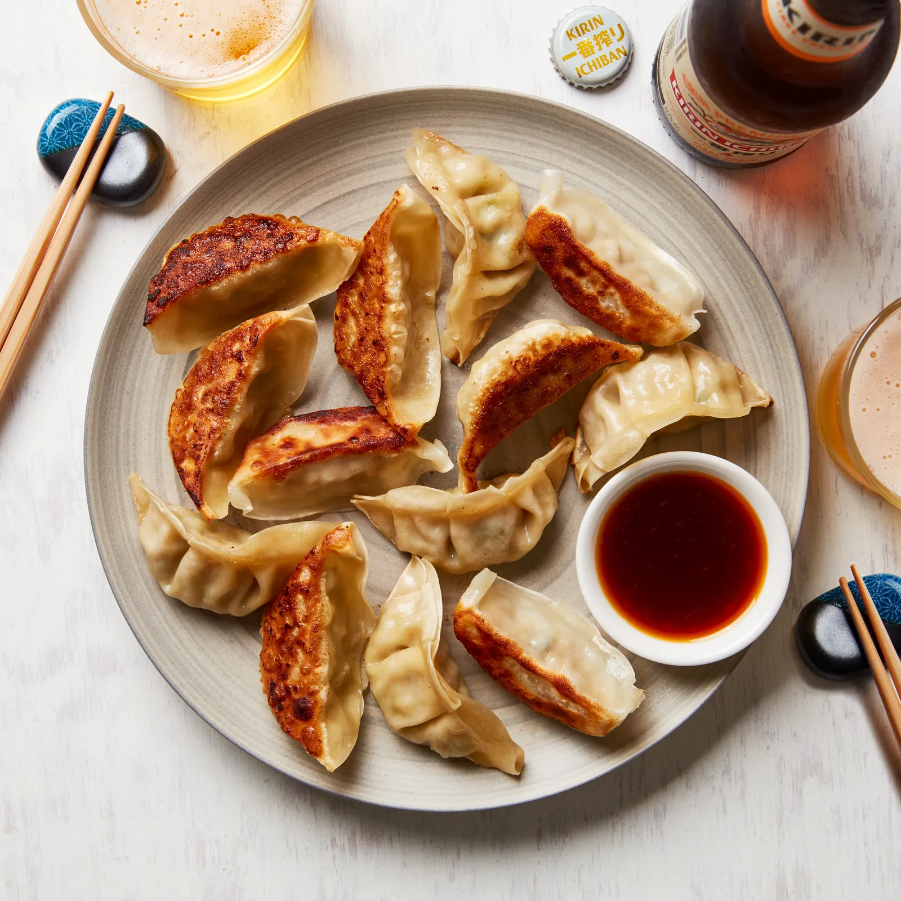

Gyoza Recipe

Description
Gyoza are Japanese dumplings filled with moist and juicy ground pork, vegetables, and wrapped in a thin dough. They are pan-fried until crispy on the bottom and steamed to cook the filling. Gyoza are a popular appetizer in Japan and are often served with a dipping sauce made of soy sauce, rice vinegar, and chili oil.
Ingredients
- 1 packet 50 gyoza wrappers
- Gyoza filling:
- ⅛ head of cabbage
- 1 teaspoon salt
- 400 g lean ground pork or chicken
- ½ bunch garlic chives, finely chopped
- 4 dried shiitake mushrooms, soaked in hot water and finely chopped
- 1 tablespoon grated ginger
- 2 teaspoons soy sauce
- 2 teaspoons sesame oil, plus 2 teaspoons extra, for cooking
- Pinch of salt
- Dipping sauce:
- 2 tablespoons soy sauce
- 2 tablespoons rice vinegar
- La-Yu (Japanese chili oil), optional
Steps
- Dice cabbage finely and sprinkle with 1 teaspoon salt. Give it a bit of a massage. Leave for 10–15 minutes and then squeeze with your hands to remove any moisture.
- With your hands thoroughly mix together cabbage, ground meat, chives, mushrooms, ginger, soy sauce, sesame oil, and pinch of salt.
- Dry your hands completely (or wrappers will stick). Place a gyoza wrapper on one hand and put 1 teaspoon filling in center of wrapper.
- Brush edge of half the wrapper with cold water. Make a semi-circle by folding the wrapper in half. Pinch open sides of wrapper together with your fingers and seal the top.
- Place a large frying pan over medium-high heat, add 2 teaspoons sesame oil and arrange 20–25 gyoza in pan. Add 200ml water to cover bottom of pan, cover with lid and cook on medium-high heat for 6–7 minutes or until translucent, cooked and no liquid is left in pan. Take off lid and cook for another 30–60 seconds for the bottoms to go crunchy. Cook remaining gyoza or freeze them.
- Mix together soy sauce, vinegar and chili oil, if using. Serve gyoza hot with dipping sauce.